Millimetre-exact
Every panel gets its exact size from the real cabinet construction, not from a sketch by eye.
TOPICA is cabinet design software built for cabinet makers: draw the room, line up cabinets along the wall, and the program knows the construction and instantly gives you 3D, a millimetre-exact cut list, hardware and a price.
Windows 10/11 · Serbian and English · the trial is free
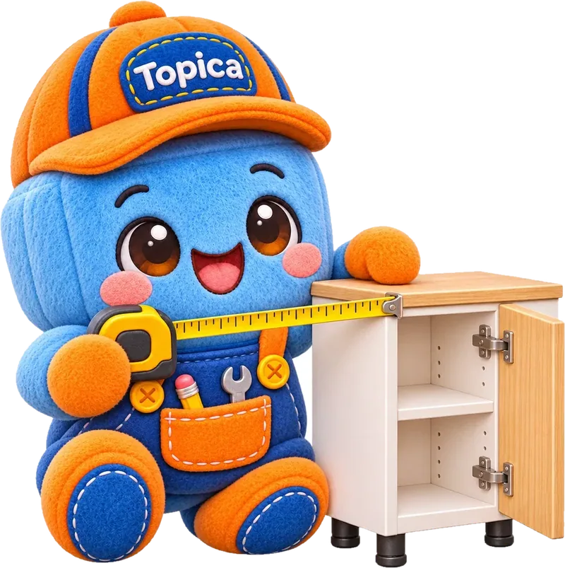
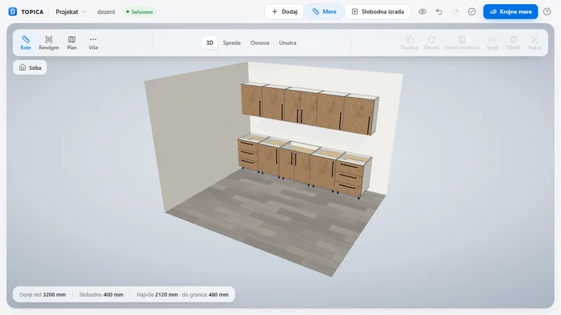
Every panel gets its exact size from the real cabinet construction, not from a sketch by eye.
Frameless carcass, edge banding, 35 mm cup hinges, drawers and plinth from the catalog. Nothing to set up again.
Same sizes on one line, grouped by material. Copy it and send it to the panel saw.
Enter the walls, ceiling height, window and services. The room is in 3D right away, with the floor and walls your customer actually has.
Base, wall, tall, sink, oven, corner. They snap to the wall and to the neighbour, and you change sizes live, to the millimetre.
The program knows the construction: sides, bottom, rails, back, front. Cut list, hardware and price are always current, with no “recalculate” button.
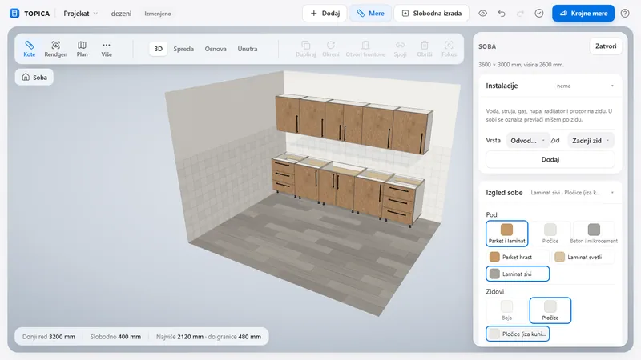
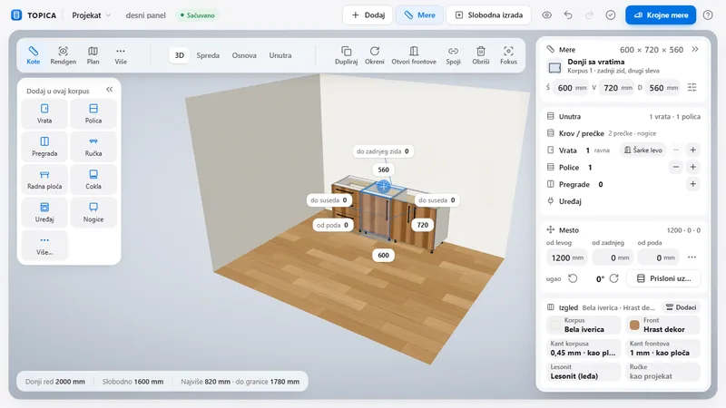
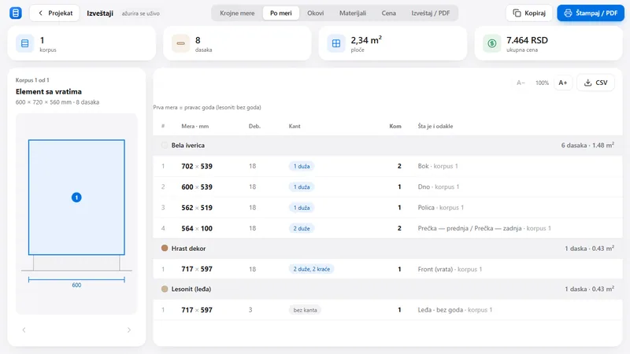
A 600 × 720 × 560 mm base cabinet, the kind every workshop builds.
The program takes it apart into panels and gives each one its exact size, edging and thickness.
The panels lie down on the sheet as a cutting plan: white chipboard, oak decor, hardboard.
And the “By size” cut list is ready to copy and send to the panel saw.
The program does this for every cabinet in the kitchen the moment you set it against the wall.
Cabinets snap to each other and to the wall, and the worktop and plinth land on top with the overall size, no drawing needed.
Kitchens, fitted wardrobes and cabinets. You decide sizes and decors; the program does the construction and the maths.
Type width, height and depth or drag the slider. Dimensions to the wall, to the neighbour and from the floor are always visible.
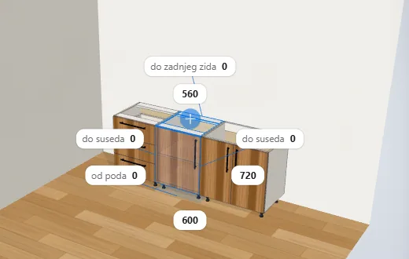
Every cabinet type comes with construction to the European standard, System 32.
Same sizes on one line, by material. The first dimension is the grain direction.
Oak, white, marble or your own decor from a photo. Whatever you change, you see at once, in a 3D kitchen design your customer understands.
They are built over the selected cabinets and travel with them when you move them.
Enter your own prices for boards, edging, hardware and labour. The program adds it up per project; you make the quote.
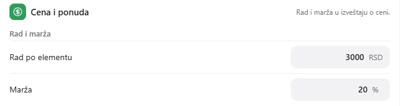
A project is one file on your computer. E-mail it to a colleague.
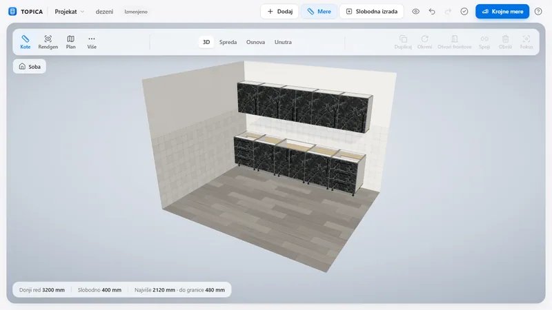
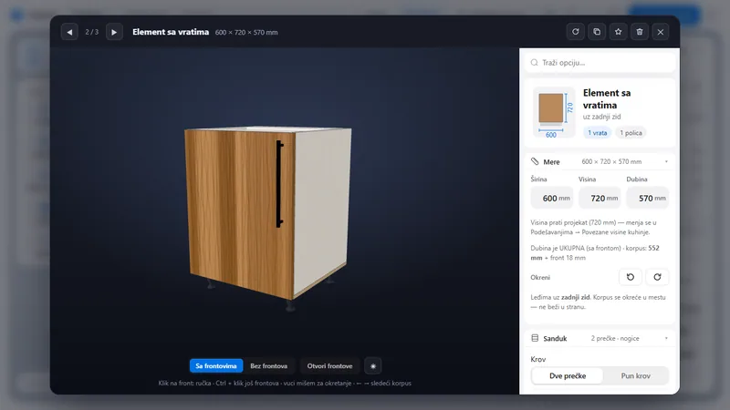
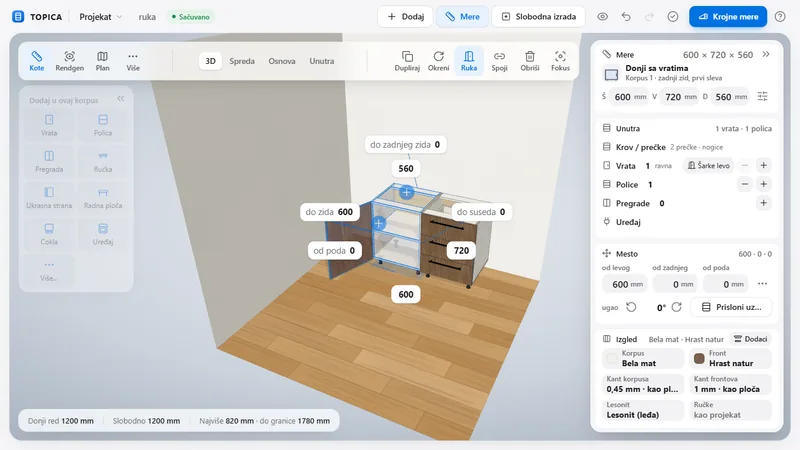
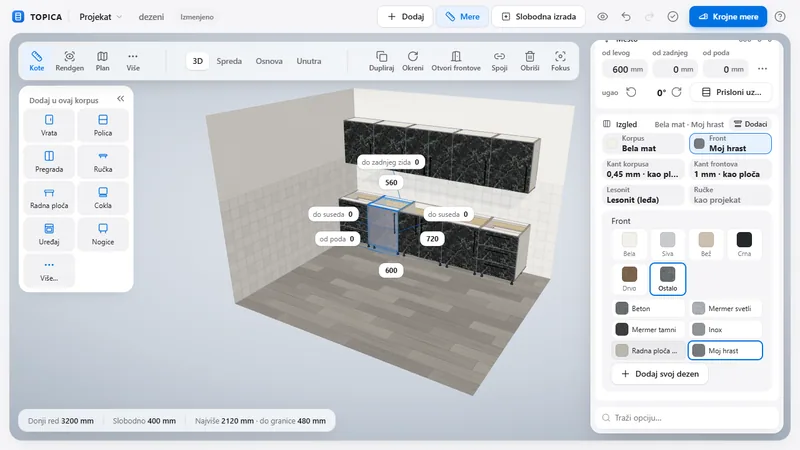
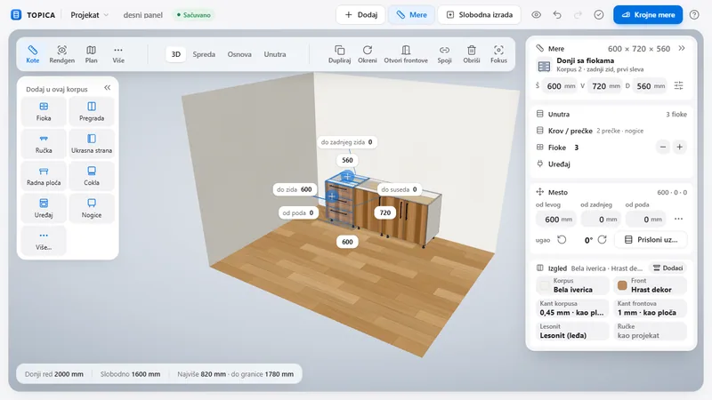
TOPICA is built in a joinery workshop in Belgrade, on real projects for real customers. That is why there is nothing in it you don't need: only what gets a tradesman from measuring to cutting faster.
Try the program on your own project, with no account and no card. The price of the full version will be announced soon.
Download the free trial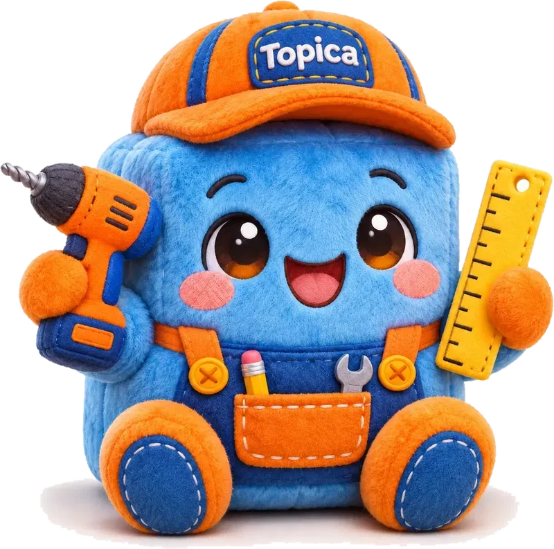
Windows 10 and Windows 11, 64-bit. The program is small and fast; it runs on an ordinary workshop laptop.
No. The program works offline and without an account. A project is a single file on your computer.
18 mm chipboard for carcass and fronts, 0.45 and 1 mm edging, 3 mm hardboard for backs; thicknesses and edging are changed in the workshop settings. Pick a decor from the list or add your own.
A cut list per cabinet and per material, the “By size” view for copying, a hardware list, board usage, price and PDF printing.
Serbian and English. You switch the language inside the program.
Yes. New versions come out regularly, and the trial can always be downloaded again from this page.
Windows 10/11. No account, no card. A cut list for your first cabinet in five minutes.
Download the free trial